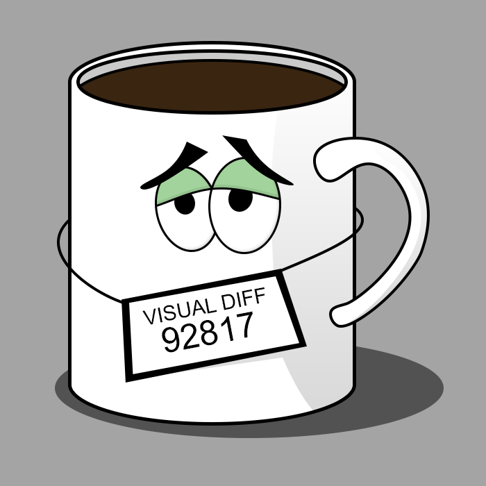
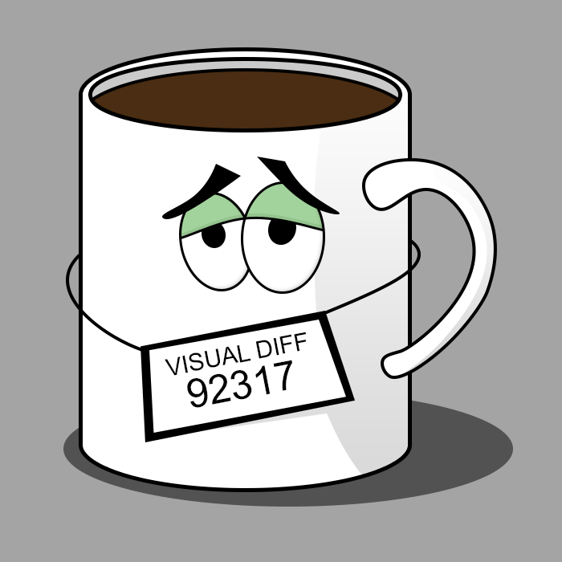

Framework independent visual testing library


Mugshot is a node library for doing visual regression testing. The way screenshots are taken, processed, compared and stored is entirely customizable. Moreover, Mugshot doesn't impose any preferences on how you write or execute the tests, it just gives you an assertion that you can call however and whenever you want.
Table of content
Features
- Framework independent so you can choose your favorite tools or plug it into your existing testing suite.
- Produces diff images if a test fails.
- Throws on missing baselines (can be toggled through options).
- Everything is pluggable (screenshotter, differ, storage etc.).
Installation
npm install --save-dev mugshotOr alternatively with yarn
yarn add -D mugshotDepending on how you want to take screenshots, you'll need a Screenshotter implementation. Mugshot bundles a BrowserScreenshotter that you can use with Webdriver compatible browsers. Each browser might need an adapter that translates its API to the interface that Mugshot expects. The following adapters are available:
| Package | Version |
|---|---|
| @mugshot/webdriverio |  |
| @mugshot/puppeteer |  |
If none of the provided adapters suit you, you can just roll your own by implementing the Browser interface. To validate your implementation you can use the contract tests package.
Intro
Manually checking one component for unexpected visual changes is hard. Doing it across your entire UI is harder. Doing it in multiple browsers/devices is even harder. Making sure that everyone on your team does it is the hardest.
Mugshot aims to automate that process. It offers a simple API that lets you compare an existing baseline screenshot with a fresh screenshot and make sure they're identical. If they're not you'll get a diff image highlighting the differences. You can then commit it as the new baseline if the changes are expected, or fix the code and rerun the tests.
| Expected | Actual | Diff |
|---|---|---|
|  |  |  |
If you have an existing testing suite then it will be straightforward to add Mugshot to it. If you're starting from scratch then you can choose your favorite tools, Mugshot doesn't impose anything on you like a test runner or a particular way to write the tests.
You can think of Mugshot as providing an assertion - "expect this part of the UI to look the same as last time". A visual test would typically look like:
- Open the app.
- Navigate to the screen you wish to check.
- Interact with the UI (scroll, click a button, input some text in a form etc.).
- Run the Mugshot assertion.
The first 3 steps are fully in your control - you are responsible for setting the test up. Once everything is set you just call Mugshot.check and Mugshot will take care of taking a new screenshot, comparing it to the baseline, producing diffs and returning a passing or a failing result.
Basic example
Here is an example of a test that makes sure a website doesn't have any visual changes using WebdriverIO:
import Mugshot, {
FsStorage,
BrowserScreenshotter,
} from 'mugshot';
import WebdriverIOAdapter from '@mugshot/webdriverio';
import { remote } from 'webdriverio';
it('GitHub project page should look the same', async () => {
const browser = await remote({
hostname: 'localhost',
capabilities: { browserName: 'chrome' }
});
const mugshot = new Mugshot(
new BrowserScreenshotter(
new WebdriverIOAdapter(browser)
),
new FsStorage('./screenshots')
);
await browser.url('https://github.com/NiGhTTraX/mugshot');
const result = await mugshot.check('project page');
expect(result.matches).toBeTruthy();
});Taking screenshots
Mugshot doesn't care where the screenshots are coming from, as long as they're in PNG format. By default it ships with a browser screenshotter, but you can plug your own implementation that either does things differently, or interacts with something other than a browser e.g. a mobile device. See the Screenshotter interface for more details.
Taking a screenshot of a single element
A selector can be passed as the second argument to Mugshot.check and will tell Mugshot to only screenshot the corresponding element. How the element is selected depends on the Screenshotter implementation. For example, using the BrowserScreenshotter, the element will be cropped out of the viewport according to its bounding rectangle.
Ignoring elements
You can ignore elements on the page by passing a selector through the ignore option. The elements identified by that selector will be painted black before taking any screenshots.
Storing screenshots
Screenshots are taken in PNG format and how they're stored is controlled by the ScreenshotStorage interface. Mugshot ships with a local file system implementation, but you could easily plug in e.g. a cloud storage implementation.
Reducing flakiness
A frequent source of flakiness in visual tests is dynamic data e.g. the current time and date or live API data. You can ignore elements that contain such data by painting over them with a solid color square. See the ignore option for more details.
Other common sources are animations and the blinking cursor in input fields. If you're using the BrowserScreenshotter you can turn them off by passing the disableAnimations flag.